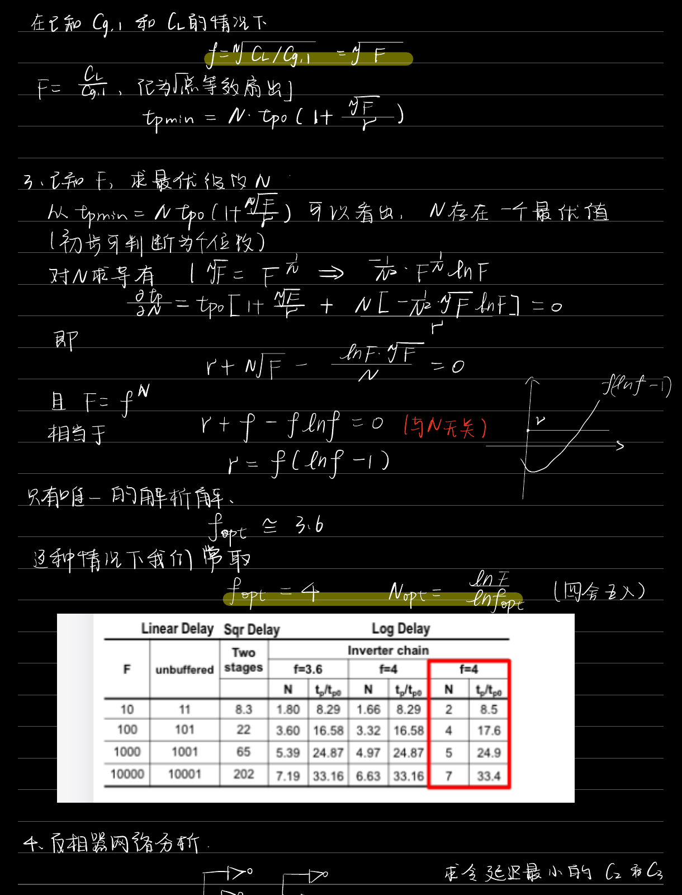
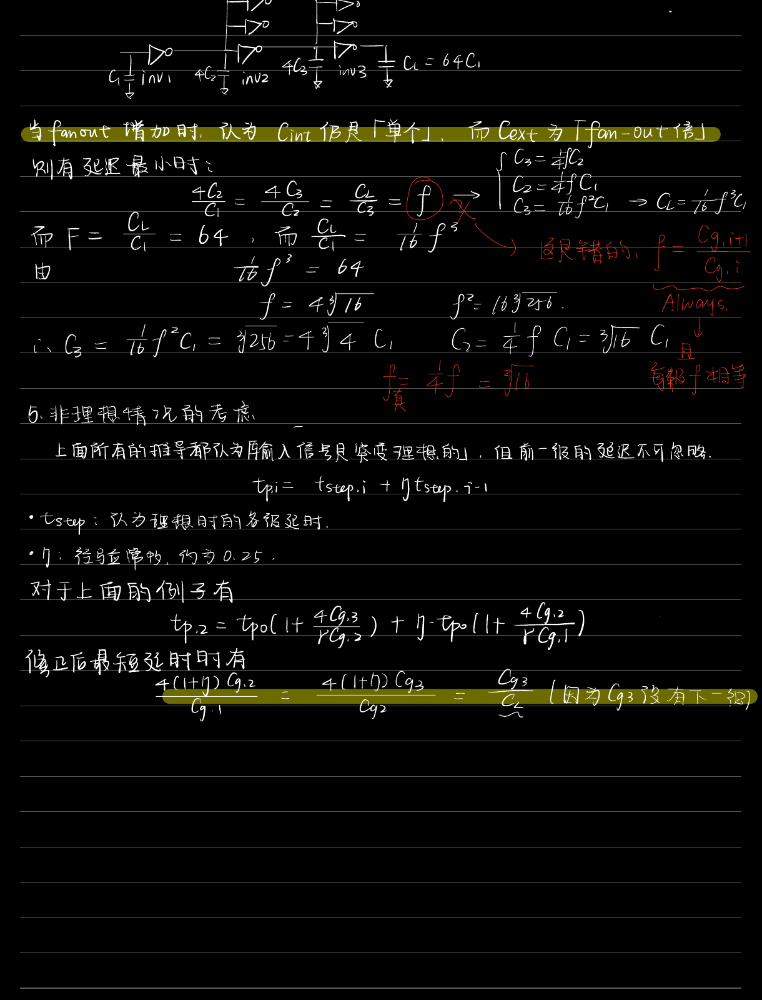

定性论述 · 第 3 章 · 自编补充论述
本题涉及的概念
分支负载与路径上的真实电气努力
关键路径外的分支门仍由路径门的输出充放电，因此必须计入该级外部负载。若某级驱动总计个相同后级，每个输入电容为，则。
定性论述题
关键路径上的某门同时驱动路径门及三个相同旁支门。为什么不能忽略旁支？“尺寸比相等”与“实际扇出相等”是否同义？
查看关联原题图表


参考答案与评分要点
考试作答
当前门必须为四个输入电容都充放电，虽然旁支后续延迟不沿该路径累加，其输入负载仍存在，所以该级。实际扇出为，相邻尺寸比仅为；不同级的分支数不同时，两者不再同义。应逐级列出所有负载后再优化，不能沿关键路径把电路中其他连接删掉。
评分要点
- 四门总负载
- 侧支后续延迟和入口负载区别
- 实际努力与尺寸比区分
为什么这样回答
不走那条路，不代表那条路入口的电容不需要当前门推动。
出处与回查
PPT/chapter3-inverter03-inverter chain 20261011.pdf· PDF 第 22 页
关联题目：